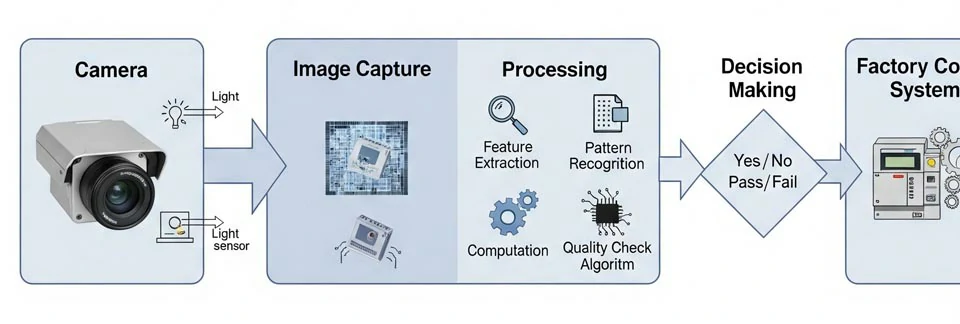
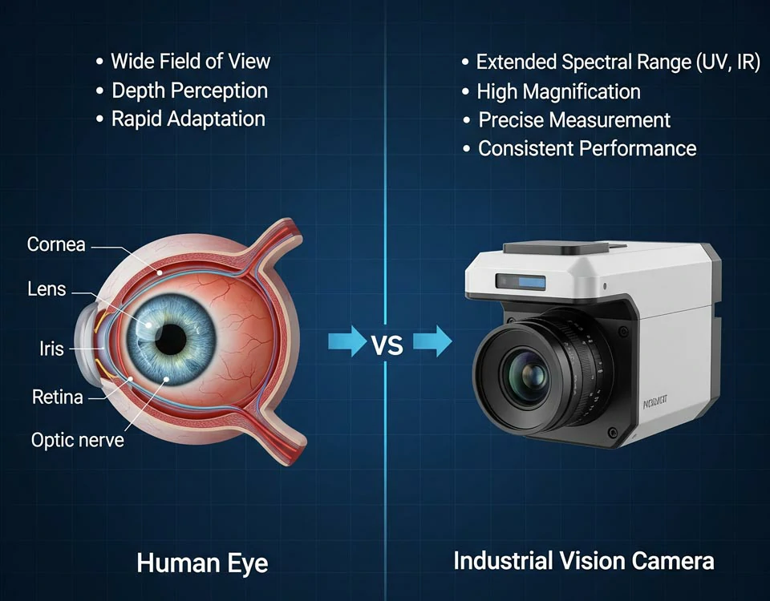
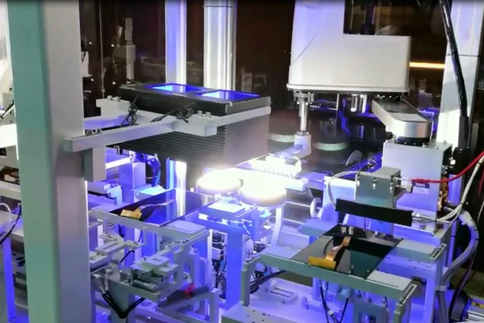
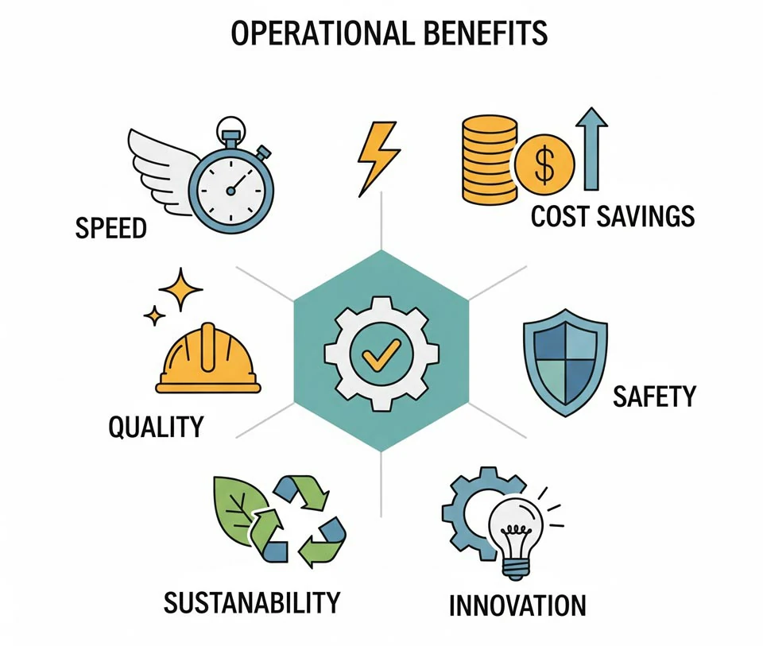
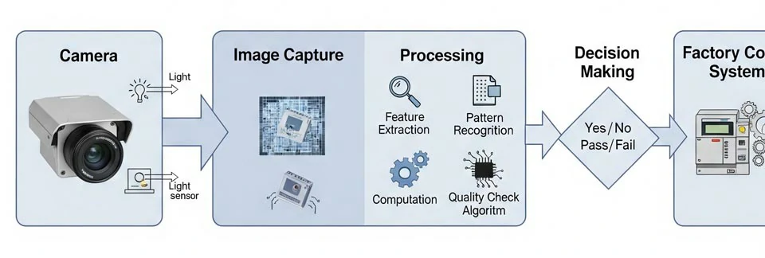
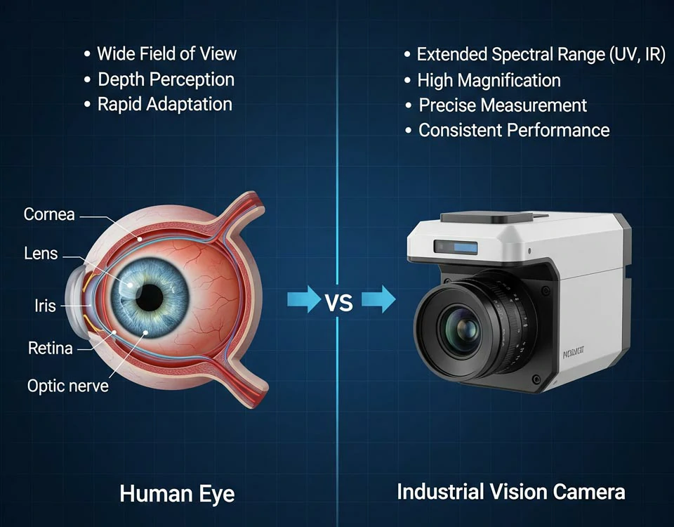
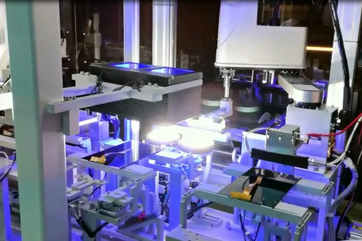

Vision Systems in Manufacturing: How Machines Are Learning to See and Think
In the relentless push for better quality, faster production, and smarter factories, one technology stands out as a game-changer: vision systems. Often referred to as machine vision or industrial vision, this innovation empowers machines to "see" and "analyze" with remarkable speed and precision—something human workers simply can’t match at scale.
Machine vision is no longer futuristic. It's here, transforming production lines, reshaping inspection processes, and driving competitive advantage across industries.
What Exactly Are Vision Systems??
At the core, a vision system is the fusion of optics, hardware, and software that enables a machine to:
- Capture an image of an object
- Process and analyze that image
- Make decisions based on programmed logic
In essence, it replicates human visual inspection but with far more consistency, speed, and capability. Some systems even go beyond the visible spectrum, using infrared or ultraviolet imaging to detect flaws or details imperceptible to the human eye.
These systems can check for surface defects, verify dimensions, guide robotic arms, read barcodes, or track objects through the production cycle. It's not just about seeing—it's about making intelligent decisions in real time.

How Vision Systems Outperform Manual Inspection
Traditional inspection methods depend on human workers to visually scan products for flaws. But human eyes fatigue, attention slips, and errors occur. Vision systems never blink. They apply the same criteria 24/7 without rest, bias, or inconsistency.

More importantly, machine vision goes where human vision cannot. Ultra-precise measurements? Check. Real-time inspection at high speeds? Check. Light conditions or microscopic details beyond the human threshold? No problem.
This makes vision systems especially valuable in industries where precision is non-negotiable: automotive, electronics, food and beverage, pharmaceuticals, and medical devices.

Key Operational Benefits of Machine Vision
Machine vision isn't just about better inspection—it's about redefining the entire production ecosystem. Here's how:
- 1, Increased Competitiveness
Automated visual inspection boosts productivity and throughput, allowing companies to produce more in less time. Speed doesn't compromise quality—it improves it.
- 2. Lower Costs
Downtime, defects, and waste are expensive. Vision systems detect issues early, often before they escalate into production halts or costly recalls. And because they integrate into factory control systems, they help identify root causes instantly.
- 3. Higher Product Quality
With machine vision, manufacturers can apply 100% inspection—checking every product, every time. That's impossible with manual inspection at scale. This leads to more consistent quality and fewer customer issues.
- 4. Improved Brand Reputation
Quality and compliance are tightly linked. Vision systems make it easier to meet stringent industry standards, avoid product recalls, and uphold brand integrity. They offer a level of transparency and traceability that regulators love—and customers expect.
- 5. Streamlined Customer Complaint Handling
By archiving images and data throughout the production process, manufacturers can quickly trace and investigate any complaints. This not only speeds up resolution but also demonstrates professionalism and accountability.
- 6. Increased Workplace Safety
Machine vision plays a critical role in machine guarding and hazard detection, contributing to a safer work environment. Automated inspection also reduces the need for workers to engage in repetitive or hazardous visual tasks.
- 7. Sustainable Manufacturing
Vision systems support lean manufacturing and Just-In-Time (JIT) processes. They reduce waste, optimize material flow, prevent system jams, and enable better resource usage. In turn, this leads to energy savings, less scrap, and smaller environmental footprints.
- 8. Room for Innovation
When machines take over repetitive inspection tasks, human workers can focus on higher-value work—like process optimization, product innovation, or creative problem-solving. Vision systems free up mental bandwidth for smarter operations.

Real-World Applications
Let's ground this in practice. Here's where machine vision is already making a difference:
- Automotive: Detecting paint defects, verifying welds, inspecting engine components.
- Electronics: Ensuring solder joint quality, checking printed circuit boards.
- Pharmaceuticals: Validating labels, verifying fill levels in vials, detecting packaging defects.
- Food & Beverage: Checking for missing labels, inspecting fill levels, detecting product contamination.
- Logistics: Sorting packages, reading barcodes and QR codes, tracking shipments.
The Future of Machine Vision
What's next? The future of vision systems lies in intelligent automation—pairing vision with AI, edge computing, and robotics. We're moving beyond rules-based inspection to adaptive learning, where systems not only follow logic but also learn from data patterns.
Expect faster, smarter, and more autonomous systems that:
- Self-optimize inspection parameters
- Detect previously unknown defect types
- Predict failures before they occur
- Seamlessly integrate with enterprise resource planning (ERP) and manufacturing execution systems (MES)
Vision systems aren't just enhancements—they're enablers. They unlock new levels of precision, efficiency, and scalability in manufacturing operations. As demand grows for higher quality, lower costs, and more sustainable production, machine vision will continue to be a core technology driving industrial innovation.
Lets's Talk.
If you're ready to unlock better efficiency, quality, and control through machine vision, we're ready to help. Our team can assess your current process and show you where automation will make the biggest impact—fast.
Let's make your production line smarter, safer, and more successful.
Contact us now or Call us for [Schedule a free consultation]
In the relentless push for better quality, faster production, and smarter factories, one technology stands out as a game-changer: vision systems. Often referred to as machine vision or industrial vision, this innovation empowers machines to "see" and "analyze" with remarkable speed and precision—something human workers simply can’t match at scale.
Machine vision is no longer futuristic. It's here, transforming production lines, reshaping inspection processes, and driving competitive advantage across industries.
What Exactly Are Vision Systems??
At the core, a vision system is the fusion of optics, hardware, and software that enables a machine to:
- Capture an image of an object
- Process and analyze that image
- Make decisions based on programmed logic
In essence, it replicates human visual inspection but with far more consistency, speed, and capability. Some systems even go beyond the visible spectrum, using infrared or ultraviolet imaging to detect flaws or details imperceptible to the human eye.
These systems can check for surface defects, verify dimensions, guide robotic arms, read barcodes, or track objects through the production cycle. It's not just about seeing—it's about making intelligent decisions in real time.
How Vision Systems Outperform Manual Inspection
Traditional inspection methods depend on human workers to visually scan products for flaws. But human eyes fatigue, attention slips, and errors occur. Vision systems never blink. They apply the same criteria 24/7 without rest, bias, or inconsistency.
More importantly, machine vision goes where human vision cannot. Ultra-precise measurements? Check. Real-time inspection at high speeds? Check. Light conditions or microscopic details beyond the human threshold? No problem.
This makes vision systems especially valuable in industries where precision is non-negotiable: automotive, electronics, food and beverage, pharmaceuticals, and medical devices.
Key Operational Benefits of Machine Vision
Machine vision isn't just about better inspection—it's about redefining the entire production ecosystem. Here's how:
- 1, Increased Competitiveness
Automated visual inspection boosts productivity and throughput, allowing companies to produce more in less time. Speed doesn't compromise quality—it improves it. - 2. Lower Costs
Downtime, defects, and waste are expensive. Vision systems detect issues early, often before they escalate into production halts or costly recalls. And because they integrate into factory control systems, they help identify root causes instantly. - 3. Higher Product Quality
With machine vision, manufacturers can apply 100% inspection—checking every product, every time. That's impossible with manual inspection at scale. This leads to more consistent quality and fewer customer issues. - 4. Improved Brand Reputation
Quality and compliance are tightly linked. Vision systems make it easier to meet stringent industry standards, avoid product recalls, and uphold brand integrity. They offer a level of transparency and traceability that regulators love—and customers expect. - 5. Streamlined Customer Complaint Handling
By archiving images and data throughout the production process, manufacturers can quickly trace and investigate any complaints. This not only speeds up resolution but also demonstrates professionalism and accountability. - 6. Increased Workplace Safety
Machine vision plays a critical role in machine guarding and hazard detection, contributing to a safer work environment. Automated inspection also reduces the need for workers to engage in repetitive or hazardous visual tasks. - 7. Sustainable Manufacturing
Vision systems support lean manufacturing and Just-In-Time (JIT) processes. They reduce waste, optimize material flow, prevent system jams, and enable better resource usage. In turn, this leads to energy savings, less scrap, and smaller environmental footprints. - 8. Room for Innovation
When machines take over repetitive inspection tasks, human workers can focus on higher-value work—like process optimization, product innovation, or creative problem-solving. Vision systems free up mental bandwidth for smarter operations.
Real-World Applications
Let's ground this in practice. Here's where machine vision is already making a difference:
- Automotive: Detecting paint defects, verifying welds, inspecting engine components.
- Electronics: Ensuring solder joint quality, checking printed circuit boards.
- Pharmaceuticals: Validating labels, verifying fill levels in vials, detecting packaging defects.
- Food & Beverage: Checking for missing labels, inspecting fill levels, detecting product contamination.
- Logistics: Sorting packages, reading barcodes and QR codes, tracking shipments.
The Future of Machine Vision
What's next? The future of vision systems lies in intelligent automation—pairing vision with AI, edge computing, and robotics. We're moving beyond rules-based inspection to adaptive learning, where systems not only follow logic but also learn from data patterns.
Expect faster, smarter, and more autonomous systems that:
- Self-optimize inspection parameters
- Detect previously unknown defect types
- Predict failures before they occur
- Seamlessly integrate with enterprise resource planning (ERP) and manufacturing execution systems (MES)
Vision systems aren't just enhancements—they're enablers. They unlock new levels of precision, efficiency, and scalability in manufacturing operations. As demand grows for higher quality, lower costs, and more sustainable production, machine vision will continue to be a core technology driving industrial innovation.
Lets's Talk.
If you're ready to unlock better efficiency, quality, and control through machine vision, we're ready to help. Our team can assess your current process and show you where automation will make the biggest impact—fast.
Let's make your production line smarter, safer, and more successful.
Contact us now or Call us for [Schedule a free consultation]